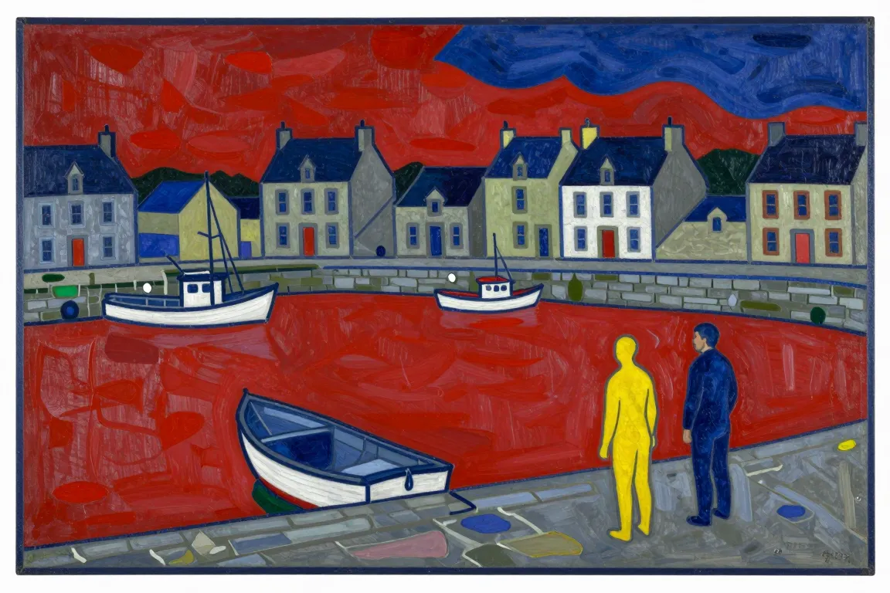

Flate felt av ren farge holdt av et mørkt omriss, malt fra hukommelse og følelse. Maleren kombinerer den sette scenen, følelsen og linjens og fargens rene form til ett enkelt, dekorativt bilde.

Kjerneidé
Et bilde bør forene den sette tingen, malerens følelse og fargens og linjens rene form, og bør ikke kopiere scenen etter øyet.
Designprinsipper
Fyll hver form med én flat farge uten overgang, i en flekk på 30 til 300 mm.
Tegn en mørk blå eller svart kontur på 3 til 8 mm rundt hver flekk, som blyet i et glassmaleri.
Velg farger etter følelse og ikke etter natur: et rødt felt, en gul Kristus, et blått tre.
Flat ut rommet til 2 lag, uten slagskygge og uten sentralperspektiv.
Sett formene i en rytme av kurver, og skjær scenen med et tre eller en høy horisont på 10 til 20 % fra toppen.
Mal fra hukommelsen og fra skisser, slik at detaljene går tapt og hovedformen blir stående.
Velg et enkelt, fromt eller rustikt motiv, som kvinner i bønn, en åker, en kalvarie eller en gård.